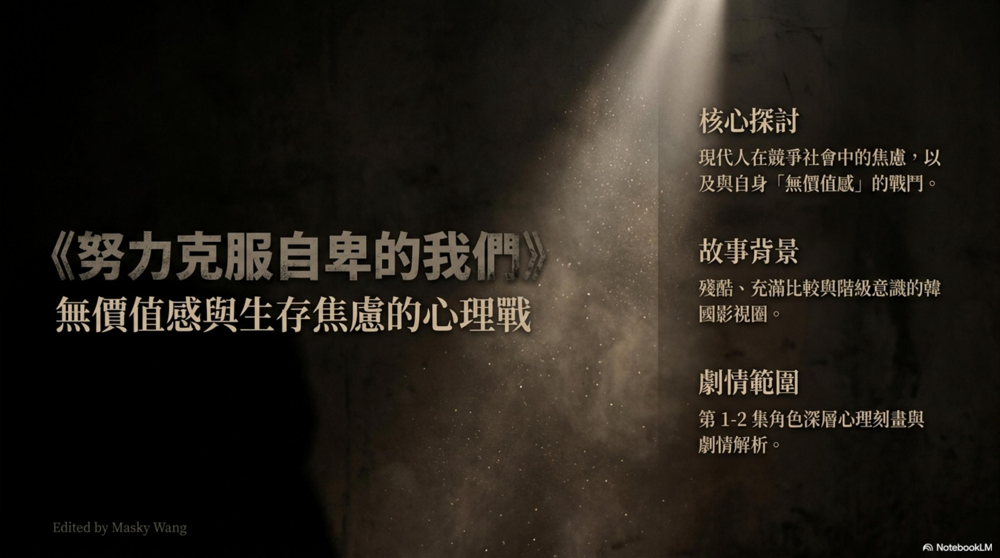
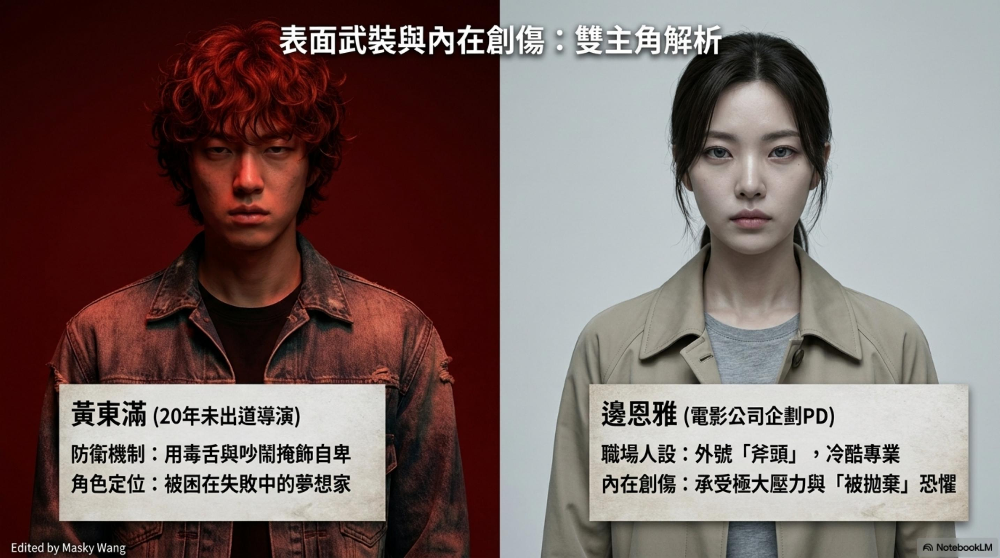
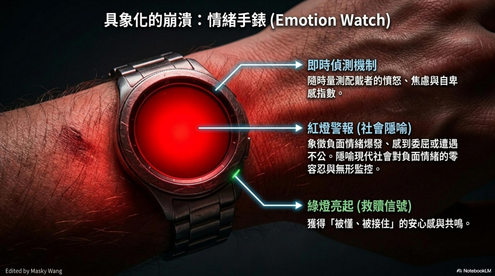
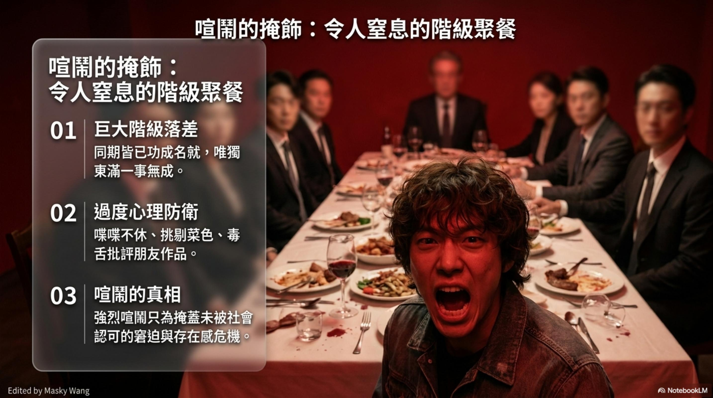
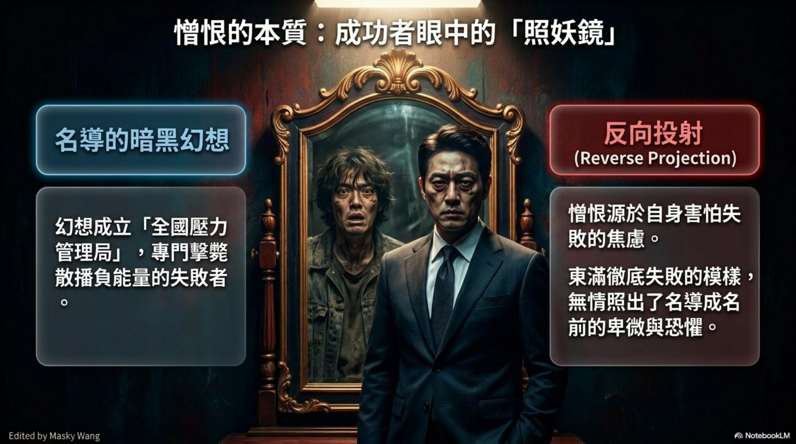
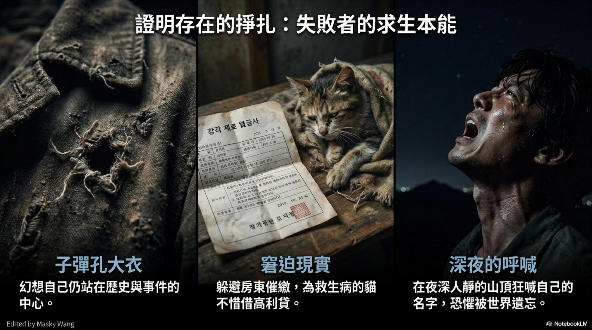
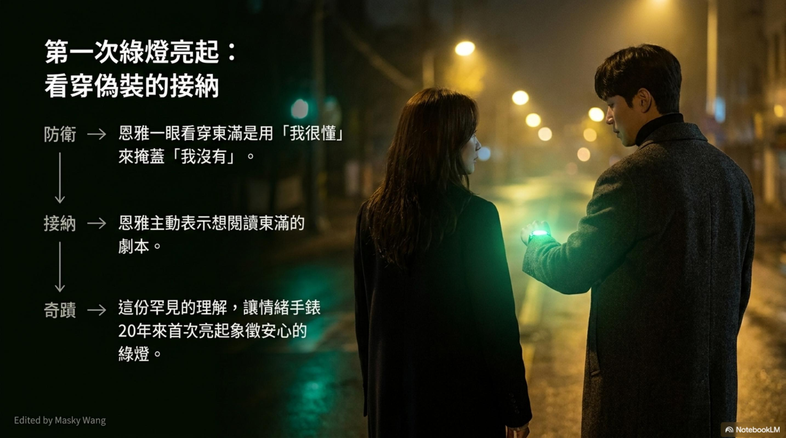
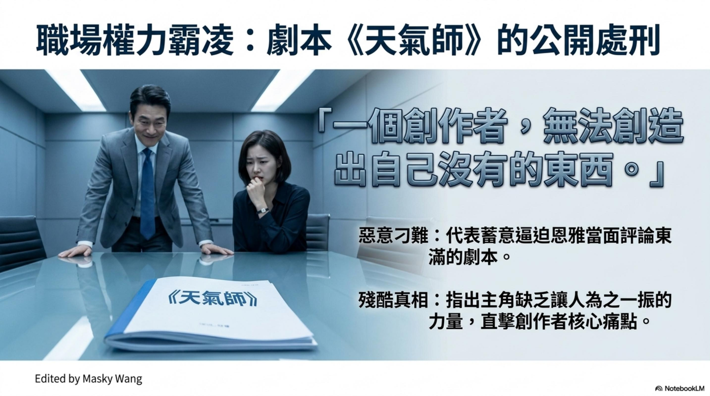

在現代社會的洪流裡，每個人都在進行一場關於「無價值感」的無聲戰爭。這不只是生存的焦慮，更是靈魂與現實的對壘。我們透過影視圈這個階級分明、充滿比較的殘酷縮影，試圖在那層層剝開的心理刻畫中，尋找克服自卑的可能。

▲ 在現代社會的洪流裡，每個人都在進行一場關於「無價值感」的無聲戰爭。
封面故事
靈魂與現實的對壘
這不只是一部關於自卑的韓劇，而是一面殘酷的鏡子——映照出我們每一個人在競爭社會裡，與「無價值感」搏鬥的真實樣貌。
「核心探討：現代人在競爭社會中的焦慮，以及與自身「無價值感」的戰鬥。」
人物誌

▲ 黃東滿 × 邊恩雅：表面武裝之下，藏著兩顆千瘡百孔的靈魂。
黃東滿的面具
每個人都帶著面具生活。黃東滿用毒舌和喧鬧，試圖掩飾那二十年未出道的窘迫，他是個被困在失敗裡的夢想家——他的憤世嫉俗，不過是一個不敢承認自己還在等待的人，最後的自尊。
邊恩雅的武裝
而邊恩雅則把自己活成一把冷酷的「斧頭」，用專業的武裝來應對內心深處被拋棄的恐懼。這些表面的人設，其實都是保護創傷的防衛機制——越是強悍的外表，往往藏著越深的傷。
深度解析

▲ 情緒手錶：紅燈是社會對負面情緒的零容忍；綠燈，是「被懂、被接住」的瞬間。
具象化的崩潰
情緒手錶的隱喻
想像有一只「情緒手錶」，能即時讀取你的憤怒與焦慮。當紅燈亮起，那是社會對負面情緒的零容忍，也是一種無形的監控與隱喻。而那罕見的綠燈，代表的是在冰冷的規則中，我們終於獲得了「被懂、被接住」的瞬間。
「紅燈的恐懼與綠燈的救贖，都是同一顆脆弱靈魂的兩面。」

▲ 那場令人窒息的階級聚餐，是自卑在飯桌上的赤裸演出。
喧鬧的掩飾
令人窒息的階級聚餐
在充滿階級落差的聚餐桌上，喧鬧往往是自卑的變形。當東滿喋喋不休地挑剔菜色、批評朋友時，其實他只是想掩蓋那份一事無成的窘迫，用尖銳的聲音證明自己還存在。
特寫群像
失敗者的三種臉孔

▲ 照妖鏡——成功者的恐懼
心理剖析
憎恨源於恐懼
有些憎恨，其實是源於恐懼。成功者對失敗者的厭惡，有時是因為對方像一面「照妖鏡」，無情地照出了自己成名前的卑微。這種「反向投射」，讓我們看清了成功背後的焦慮。

▲ 子彈孔大衣、催繳通知、深夜的狂喊
生存本能
證明存在的掙扎
失敗者也有自己的求生本能。東滿穿上那件幻想中代表歷史中心的大衣，卻掩不住要躲避催繳、為貓借貸的現實。深夜山頂的狂喊，更是因為恐懼被這個世界遺忘。

▲ 第一次綠燈亮起：看穿偽裝的接納
綠燈時刻
看穿偽裝的接納
二十年來，那只手錶第一次亮起了象徵安心的綠燈。奇蹟發生的關鍵，在於有人看穿了你的防禦，卻沒有轉身離去，而是溫柔地告訴你：我想讀讀你的心聲。

▲「一個創作者，無法創造出自己沒有的東西。」——這句話像刀，精準刺入最深的傷口。
職場解析
劇本《天氣師》的公開處刑
職場的權力霸凌有時極其殘酷，像是對創作者的公開處刑。當恩雅被迫評價東滿的劇本時，那句「無法創造出自己沒有的東西」，直擊了創作者最核心的痛點——那份缺乏生命力量的真實匱乏。
「惡意刁難，不過是將另一個人的傷口，作為自己優越感的祭品。」